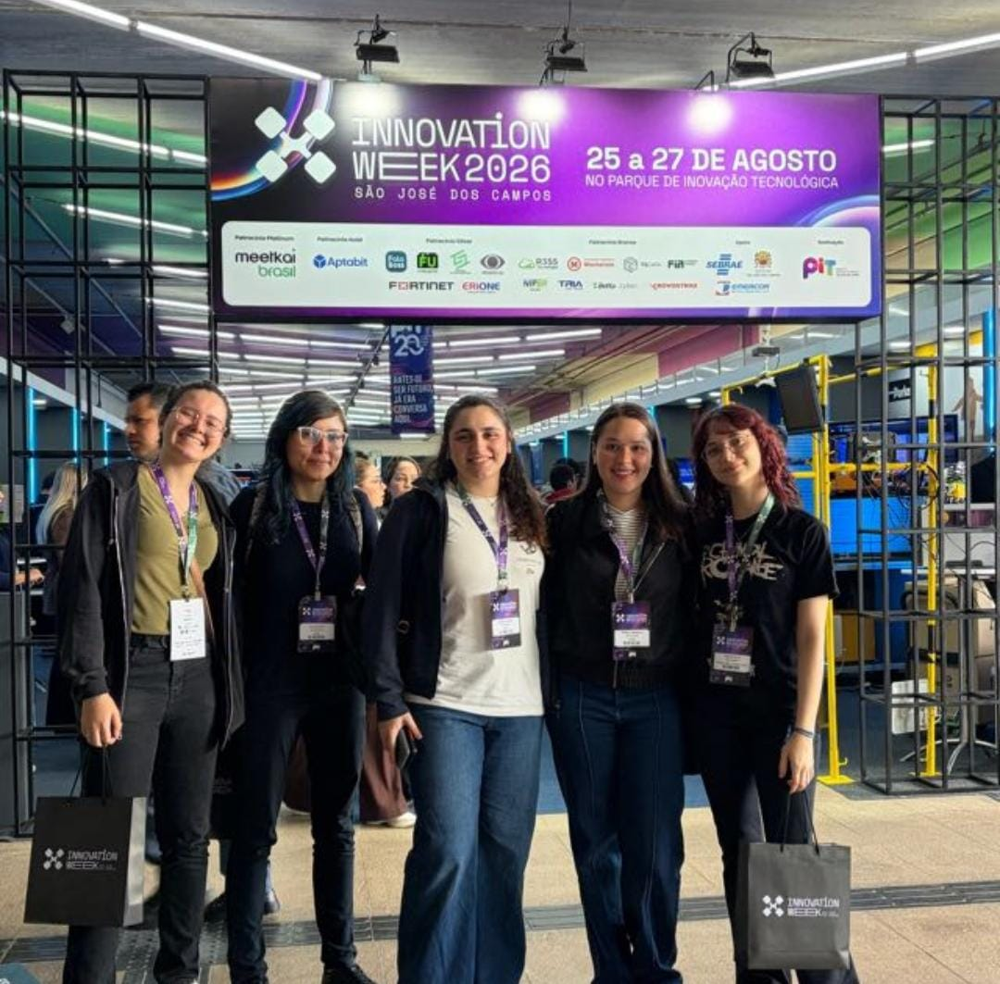

Olá, sou a Lavínia, estudante de Desenvolvimento de Software Multiplataforma na FATEC de SJC, com foco em desenvolvimento front-end e organização de projetos. Tenho perfil colaborativo, gosto de trabalhar em equipe e contribuir na resolução de problemas de forma prática.
Meu Objetivo é aplicar meus conhecimentos em projetos reais, criando soluções funcionais e bem estruturadas, enquanto continuo evoluindo como desenvolvedora
Ferramentas que utilizo no desenvolvimento dos meus projetos:
Disposição para colaborar e contribuir em equipe
Busca constante por melhorias e novas soluções
Comunicação clara na troca de ideias e soluções
Capacidade de analisar e resolver problemas de forma prática
Organização de tarefas, informações e etapas de trabalho
Análise de situações para compreender problemas e encontrar soluções
Interesse em aprender e acompanhar novas tecnologias e práticas
Aqui você encontra alguns dos projetos que desenvolvi e contribui, aplicando na prática meus conhecimentos e evoluindo a cada novo desafio.
Aqui estão alguns dos eventos e experiências que marcaram minha jornada como desenvolvedora, contribuindo para meu crescimento profissional e pessoal.

Maio de 2026
Evento focado em inovação, tecnologia e negócios, com palestras, networking e exposição de projetos desenvolvidos por empresas e instituições da região.
CertificadoCertificações e cursos complementares que contribuíram para o desenvolvimento das minhas competências técnicas e profissionais.
Curso sobre práticas sustentáveis para reduzir desperdícios, reutilizar recursos e promover modelos de produção e consumo mais eficientes e responsáveis.
Ver certificadoCapacitação em normas e práticas de segurança no trabalho, com foco na prevenção de acidentes e na identificação de riscos ocupacionais.
Ver certificado